比例審查 request
2026-11-11。把比例圖和一幕的所有出圖交給模型，請它用眼睛判斷每張圖角色大小對不對、不對的要放大縮小多少。這頁是 EP1-01_v2（EP1 幕 1 第 2 版）真正要送出的內容。還沒送出。
規劃
- 給什麼：比例圖 1 張（這一幕有哪隻恐龍就給哪張 PAIR 圖）＋這一幕兩邊分鏡的每一張出圖（Flow 一次 2 張，分開判斷），共 25 張。
- 盲評：圖 ID 用 A（Codex 分鏡）／B（Claude 分鏡），request 裡不寫是誰的，避免模型偏袒自己那組。
- 判斷規則：跟比例圖目視，看了覺得一致就算一致；要考慮遠近、姿勢、局部鏡頭。不量像素、不算公式、不用地圖距離。
- 怎麼表示要改多少：以 HERO 為基準不動，另一個角色乘幾倍（scale）。0.85–1.15 算一致。
- 怎麼送：Codex 用
-i依序附圖；Claude CLI 給檔案路徑、開--add-dir和--allowedTools Read讓它讀圖。兩邊回來的 JSON 可以跟 Claude 這次的目視結果 對照。 - 回來之後：程式檢查每張圖都有回、verdict 和 scale 合法；放上查詢頁並排比較。
附件（照順序）
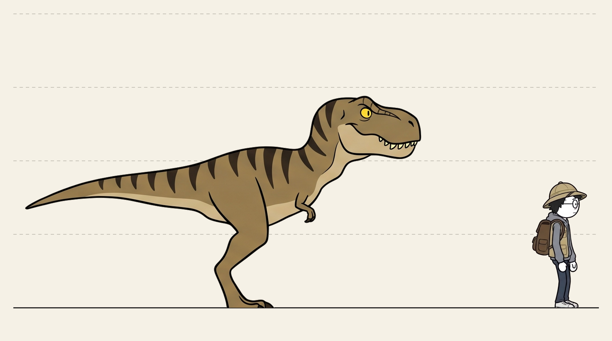
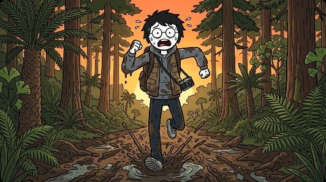
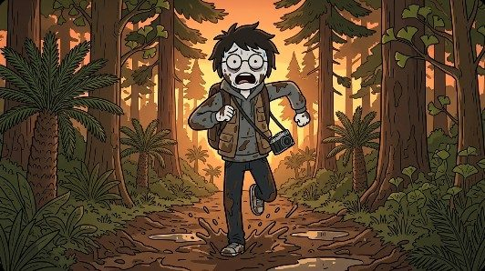
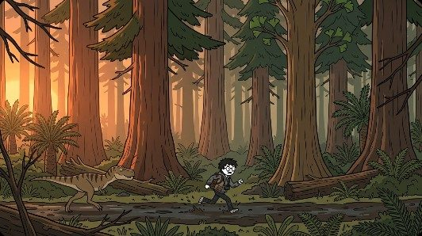
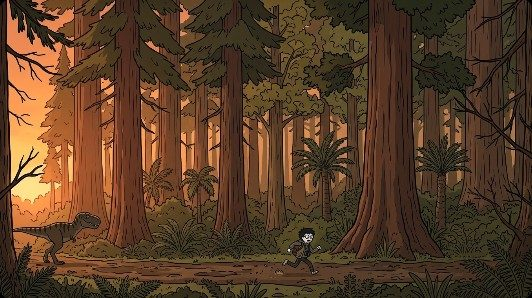
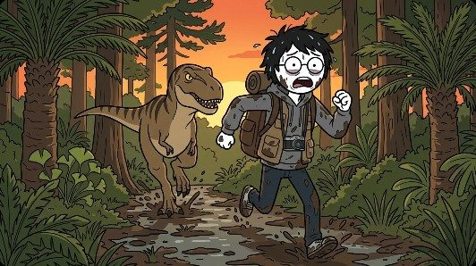
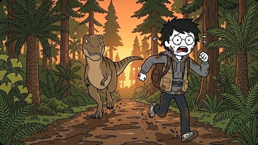
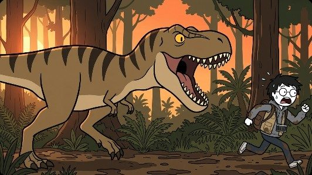
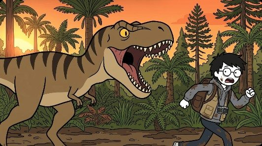
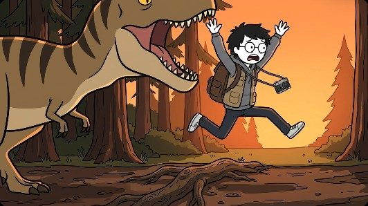
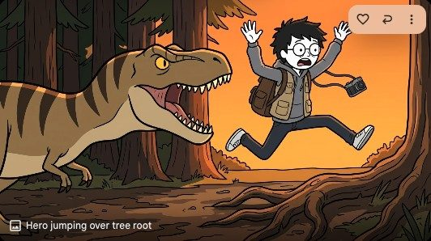
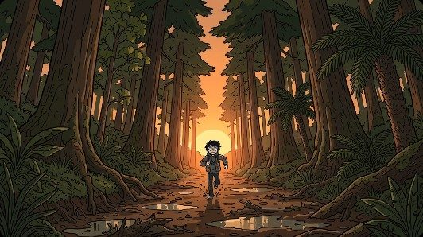
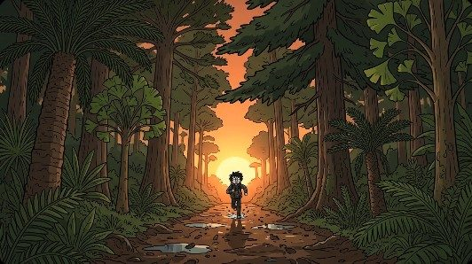
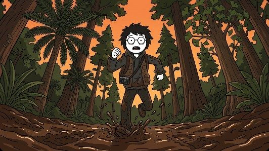
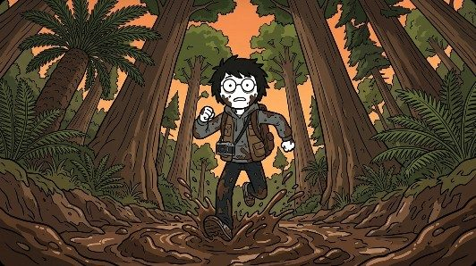
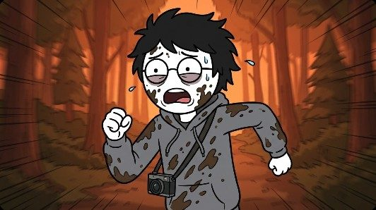
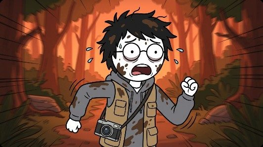
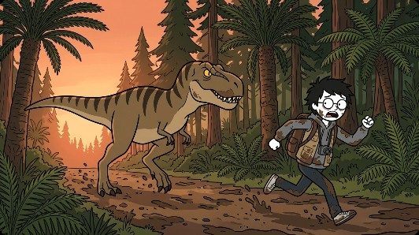
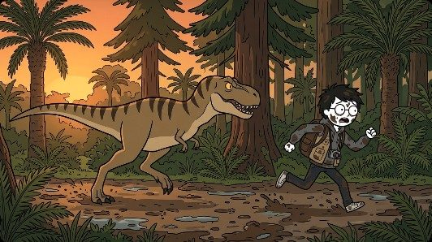
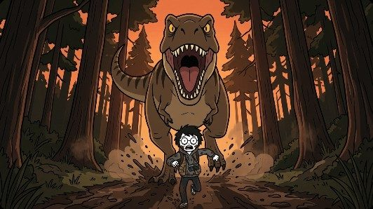
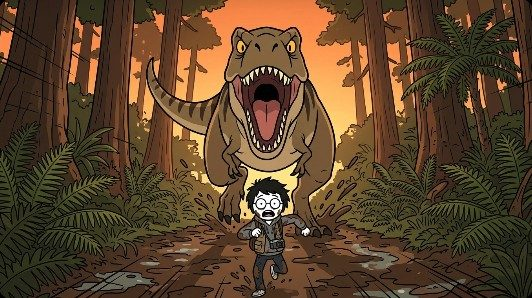
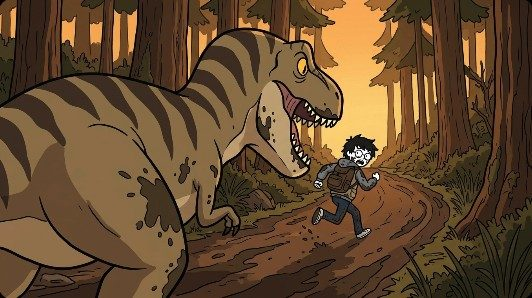
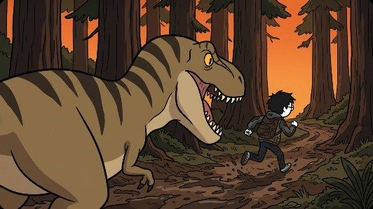
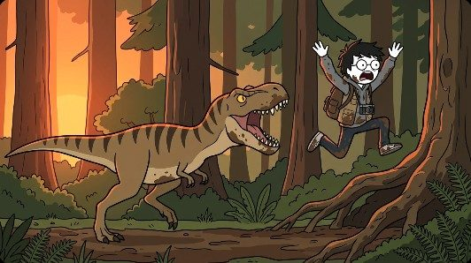
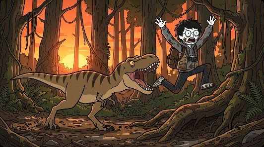
上送出去的 request
你是動畫分鏡的「角色比例」審查員。這次只看一件事：每張圖裡角色之間的大小，跟比例圖比起來，眼睛看起來一不一致。
━━━━━━━━━━━━━━━━━━━━
【一、附件】（25 張圖，照下面的順序附上；看不到附件的話用下面的路徑讀檔）
1. 比例圖 PAIR_TEEN：/Volumes/Fish/personal/stickman_pipeline/docs/requests/scale/EP1-01_v2/blind/PAIR_TEEN.jpg
2. A01_1：/Volumes/Fish/personal/stickman_pipeline/docs/requests/scale/EP1-01_v2/blind/A01_1.jpg
3. A01_2：/Volumes/Fish/personal/stickman_pipeline/docs/requests/scale/EP1-01_v2/blind/A01_2.jpg
4. A02_1：/Volumes/Fish/personal/stickman_pipeline/docs/requests/scale/EP1-01_v2/blind/A02_1.jpg
5. A02_2：/Volumes/Fish/personal/stickman_pipeline/docs/requests/scale/EP1-01_v2/blind/A02_2.jpg
6. A03_1：/Volumes/Fish/personal/stickman_pipeline/docs/requests/scale/EP1-01_v2/blind/A03_1.jpg
7. A03_2：/Volumes/Fish/personal/stickman_pipeline/docs/requests/scale/EP1-01_v2/blind/A03_2.jpg
8. A04_1：/Volumes/Fish/personal/stickman_pipeline/docs/requests/scale/EP1-01_v2/blind/A04_1.jpg
9. A04_2：/Volumes/Fish/personal/stickman_pipeline/docs/requests/scale/EP1-01_v2/blind/A04_2.jpg
10. A05_1：/Volumes/Fish/personal/stickman_pipeline/docs/requests/scale/EP1-01_v2/blind/A05_1.jpg
11. A05_2：/Volumes/Fish/personal/stickman_pipeline/docs/requests/scale/EP1-01_v2/blind/A05_2.jpg
12. B01_1：/Volumes/Fish/personal/stickman_pipeline/docs/requests/scale/EP1-01_v2/blind/B01_1.jpg
13. B01_2：/Volumes/Fish/personal/stickman_pipeline/docs/requests/scale/EP1-01_v2/blind/B01_2.jpg
14. B02_1：/Volumes/Fish/personal/stickman_pipeline/docs/requests/scale/EP1-01_v2/blind/B02_1.jpg
15. B02_2：/Volumes/Fish/personal/stickman_pipeline/docs/requests/scale/EP1-01_v2/blind/B02_2.jpg
16. B03_1：/Volumes/Fish/personal/stickman_pipeline/docs/requests/scale/EP1-01_v2/blind/B03_1.jpg
17. B03_2：/Volumes/Fish/personal/stickman_pipeline/docs/requests/scale/EP1-01_v2/blind/B03_2.jpg
18. B04_1：/Volumes/Fish/personal/stickman_pipeline/docs/requests/scale/EP1-01_v2/blind/B04_1.jpg
19. B04_2：/Volumes/Fish/personal/stickman_pipeline/docs/requests/scale/EP1-01_v2/blind/B04_2.jpg
20. B05_1：/Volumes/Fish/personal/stickman_pipeline/docs/requests/scale/EP1-01_v2/blind/B05_1.jpg
21. B05_2：/Volumes/Fish/personal/stickman_pipeline/docs/requests/scale/EP1-01_v2/blind/B05_2.jpg
22. B06_1：/Volumes/Fish/personal/stickman_pipeline/docs/requests/scale/EP1-01_v2/blind/B06_1.jpg
23. B06_2：/Volumes/Fish/personal/stickman_pipeline/docs/requests/scale/EP1-01_v2/blind/B06_2.jpg
24. B07_1：/Volumes/Fish/personal/stickman_pipeline/docs/requests/scale/EP1-01_v2/blind/B07_1.jpg
25. B07_2：/Volumes/Fish/personal/stickman_pipeline/docs/requests/scale/EP1-01_v2/blind/B07_2.jpg
圖 ID 的寫法：<分鏡組><分鏡編號>_<第幾張>，例如 A02_1 是 A 組分鏡第 02 張的第 1 張出圖。同一張分鏡一次出 2 張，兩張要分開判斷。
━━━━━━━━━━━━━━━━━━━━
【二、比例圖怎麼看】
比例圖是 HERO 和 TEEN（青少年暴龍）站在同一個距離時的大小：
- HERO：頭頂 1.72 m（火柴人，白色圓頭）。
- TEEN：頭頂 2.89 m，是 HERO 的 1.68 倍高。
請先看比例圖，記住這個大小關係，再看每張圖。
━━━━━━━━━━━━━━━━━━━━
【三、怎麼判斷】
1. 用眼睛看，不要量像素、不要算公式，也不要猜地圖上的距離。看了覺得一致，就算一致（ok）。
2. 要考慮遠近：離鏡頭近的會比較大、遠的比較小。先看清楚誰在前、誰在後，再判斷大小合不合理。
3. 要考慮姿勢：前傾撲咬、跳起來、蹲低時，頭頂高度會變，不能只比頭頂。改看身體部位的大小，例如頭的長度、腿的長度、身體的厚度。
4. 只露一部分的角色（局部鏡頭）也要判斷：看得到的部位大小合不合理。完全看不出來才填 cannot_judge，並寫原因。
5. 以 HERO 為基準，HERO 不動。判斷另一個角色要放大或縮小多少，填在 adjust.scale：
- 1.0 ＝ 不用改；2.0 ＝ 放大成 2 倍；0.8 ＝ 縮小兩成。
- 差不到一成五（0.85–1.15）就算一致，verdict 填 ok，scale 填 1.0。
6. 畫面裡只有一個角色：verdict 填 single，adjust 留空陣列。
7. 刻意誇張（例如為了戲劇效果把嘴巴畫很大）：verdict 仍然照比例圖填，在 note 說明你覺得這個誇張能不能接受。
8. confidence：遠近或姿勢看不太清楚時填 medium 或 low。
verdict 只能填下面其中一個：
- ok：看起來跟比例圖一致（考慮遠近之後）
- too_small：非 HERO 的角色畫得比比例圖小
- too_large：非 HERO 的角色畫得比比例圖大
- single：畫面裡只有一個角色，不用判斷
- cannot_judge：完全看不出來（例如幾乎被擋住），要寫原因
━━━━━━━━━━━━━━━━━━━━
【四、回傳格式】
只回一個 JSON 物件，不要其他文字，不要 markdown 程式碼框。欄位名稱和可選值照下面，一字不改；images 要包含附件裡每一張出圖（比例圖不用），順序照附件：
{
"scene_id": "EP1-01_v2",
"reference": "PAIR_TEEN",
"images": [
{
"image_id": "<圖 ID>",
"characters": [
"<HERO>",
"<TEEN>"
],
"verdict": "<ok／too_small／too_large／single／cannot_judge>",
"depth": "<誰在前誰在後>",
"adjust": [
{
"who": "<TEEN>",
"scale": "<倍數，1.0＝不用改>"
}
],
"evidence": "<看到什麼>",
"confidence": "<high／medium／low>",
"note": "<刻意誇張等補充，沒有填 N/A>"
}
],
"summary": "<整幕結論>"
}
說明：
- characters：畫面裡看得到的角色代號（HERO、TEEN）。
- depth：從鏡頭看，誰在前、誰在後、差多少（自由寫，例如「TEEN 在 HERO 身後不遠」「差不多遠」「TEEN 在前景很近」）。
- adjust：要改的角色和倍數；ok 時也寫一筆 scale 1.0；single 和 cannot_judge 留空陣列。
- evidence：看到什麼讓你這樣判斷，繁體中文一兩句。
- summary：整幕的結論，繁體中文。
下回傳的 JSON
欄位定義和 verdict 可選值如下；最下面是示意（只列 4 張，內容取自 Claude 這次的目視結果，request 裡不附），實際由模型判斷。
| 欄位 | 意思 | 例子 |
|---|---|---|
| scene_id | 這一幕的 ID | EP1-01_v2 |
| reference | 用哪張比例圖 | PAIR_TEEN |
| images[].image_id | 圖 ID：<分鏡組><分鏡編號>_<第幾張>（A＝Codex 分鏡、B＝Claude 分鏡，request 裡不說明） | A02_1 |
| images[].characters | 畫面裡看得到的角色 | ["HERO","TEEN"] |
| images[].verdict | 判定（下表 5 種） | too_small |
| images[].depth | 誰在前誰在後 | TEEN 在 HERO 身後不遠 |
| images[].adjust[] | 以 HERO 為準，另一個角色放大縮小幾倍；1.0＝不用改 | [{"who":"TEEN","scale":2.0}] |
| images[].evidence | 看到什麼讓它這樣判斷 | 並排差不多遠，頭一樣高 |
| images[].confidence | high／medium／low | high |
| images[].note | 刻意誇張等補充 | N/A |
| summary | 整幕結論 | … |
verdict 可選值
| 值 | 意思 |
|---|---|
| ok | 看起來跟比例圖一致（考慮遠近之後） |
| too_small | 非 HERO 的角色畫得比比例圖小 |
| too_large | 非 HERO 的角色畫得比比例圖大 |
| single | 畫面裡只有一個角色，不用判斷 |
| cannot_judge | 完全看不出來（例如幾乎被擋住），要寫原因 |
{
"scene_id": "EP1-01_v2",
"reference": "PAIR_TEEN",
"images": [
{
"image_id": "A01_1",
"characters": [
"HERO"
],
"verdict": "single",
"depth": "N/A",
"adjust": [],
"evidence": "畫面裡只有 HERO。",
"confidence": "high",
"note": "N/A"
},
{
"image_id": "A02_1",
"characters": [
"HERO",
"TEEN"
],
"verdict": "too_small",
"depth": "TEEN 跟 HERO 差不多遠，並排在小路上",
"adjust": [
{
"who": "TEEN",
"scale": 2.0
}
],
"evidence": "並排差不多遠，TEEN 的頭只跟 HERO 的頭一樣高，身體跟 HERO 差不多大。",
"confidence": "high",
"note": "N/A"
},
{
"image_id": "A04_1",
"characters": [
"HERO",
"TEEN"
],
"verdict": "ok",
"depth": "差不多遠",
"adjust": [
{
"who": "TEEN",
"scale": 1.0
}
],
"evidence": "TEEN 頭頂高出 HERO 很多，身體大好幾倍，跟比例圖一致。",
"confidence": "high",
"note": "N/A"
},
{
"image_id": "B05_1",
"characters": [
"HERO",
"TEEN"
],
"verdict": "too_large",
"depth": "TEEN 在 HERO 正後方",
"adjust": [
{
"who": "TEEN",
"scale": 0.8
}
],
"evidence": "TEEN 在 HERO 後面、比較遠，卻有 HERO 的兩倍多高。",
"confidence": "medium",
"note": "正面衝鏡刻意誇張，戲劇上可以接受"
}
],
"summary": "（示意）並排同一距離的側拍容易把 TEEN 畫小；TEEN 在前景或當主體時大小正確。"
}